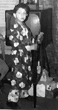

When I was seven or eight I fell asleep over this vent night after night. I had nightmares all the time. Dreams from which I'd wake up sweating. Try to scream find my throat dry and scratchy. I'd lie down by the vent in the light that seeped up from the living room where my mother and father would be up late watching TV--and some nights, if the TV wasn't going if they weren't fighting some nights they'd sit at the table, talking. Those nights the way they talked was different. It wasn't somebody always yelling at somebody. There was a back-and-forth, a quiet rocking. I could hardly ever make out a full sentence. I wasn't someplace else. I wouldn't have when they were talking I always wanted. |
 | ||||||||
|
the way things happened he clutched his hair in the thin bars of sunlight |